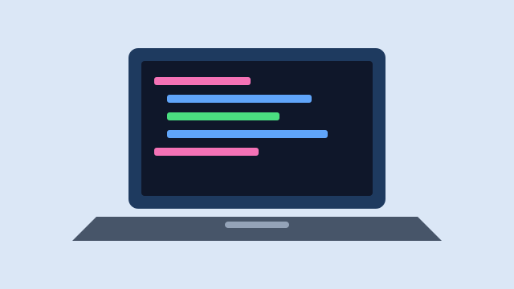

Blog
Moje pierwsze kroki w tworzeniu stron internetowych
Przygodę z tworzeniem stron zacząłem od najprostszego pliku index.html
z jednym nagłówkiem i akapitem. Po otwarciu go w przeglądarce okazało się, że
kilka linijek tekstu wystarczy, by zobaczyć efekt swojej pracy — i to było
najbardziej motywujące.
Najpierw struktura, potem wygląd
Pierwsza ważna lekcja: HTML opisuje znaczenie treści, a nie jej
wygląd. Zamiast stawiać wszędzie <div>, warto użyć znaczników
semantycznych — <header>, <nav>,
<main>, <article> czy <footer>.
Dzięki temu strona jest czytelniejsza dla czytników ekranu, wyszukiwarek i dla mnie
samego po kilku tygodniach.

CSS: Flexbox i Grid
Najwięcej czasu spędziłem na układaniu elementów. Flexbox świetnie sprawdza się
w jednym wymiarze, np. w pasku nawigacji, a Grid — przy galeriach i układach
kolumnowych. Połączenie repeat(auto-fill, minmax(...)) sprawia,
że kafelki same dopasowują się do szerokości ekranu bez ani jednego media query.
Dobra strona to nie ta, do której nie da się już nic dodać, ale ta, z której nie da się już nic usunąć.
Czego się nauczyłem
Warto od początku trzymać style w jednym, wspólnym pliku i korzystać ze zmiennych CSS. Zmiana koloru przewodniego w jednym miejscu aktualizuje cały serwis — tak działa też przełącznik jasnego i ciemnego motywu na tej stronie. Kolejnym krokiem jest JavaScript, o którym napiszę w następnym wpisie.